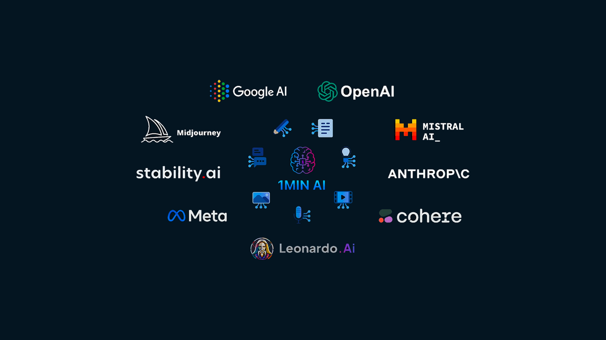
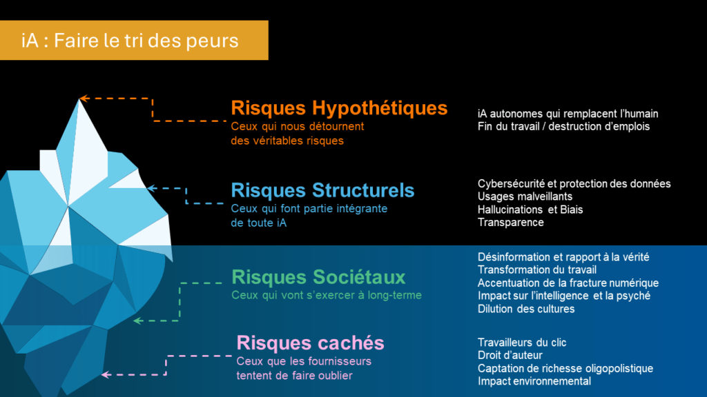

Veille
L’intelligence artificielle générative au service des développeurs
Comment des outils comme GitHub Copilot, ChatGPT ou Amazon CodeWhisperer révolutionnent le quotidien des développeurs et la production logicielle.
Qu’est-ce que l’IA générative ?
L’IA générative désigne des modèles capables de produire du texte, du code, des images ou d’autres contenus à partir de simples instructions. Dans le développement, ces IA sont entraînées sur d’immenses corpus de code et peuvent générer, corriger ou expliquer du code source.
- Génération automatique de fonctions, classes, tests
- Suggestions contextuelles en temps réel
- Documentation et explication de code
- Détection d’erreurs et correction automatique
Les principaux outils
GitHub Copilot
ChatGPT
Amazon CodeWhisperer
- GitHub Copilot : assistant de code intégré à l’éditeur, propose des complétions et des snippets adaptés au contexte.
- ChatGPT : conversationnel, il peut expliquer, corriger, générer du code ou aider à la résolution de bugs.
- Amazon CodeWhisperer : orienté cloud et AWS, il assiste dans la génération de code compatible avec les services Amazon.

Impacts sur le métier de développeur
- Gain de productivité et réduction du temps de développement
- Amélioration de la qualité du code (moins d’erreurs, meilleures pratiques)
- Facilitation de l’apprentissage et de la montée en compétence
- Évolution du rôle du développeur : plus de supervision, de validation et de créativité
Limites et enjeux éthiques
- Risque de génération de code non sécurisé ou non conforme
- Questions de propriété intellectuelle et de droits d’auteur
- Dépendance accrue aux outils et perte de compétences fondamentales
- Biais et erreurs possibles dans les suggestions

Conclusion
L’IA générative transforme profondément le métier de développeur. Bien utilisée, elle permet de gagner en efficacité, d’apprendre plus vite et de se concentrer sur des tâches à forte valeur ajoutée. Mais elle nécessite aussi une vigilance éthique et une adaptation continue des compétences.
Sources et articles pour approfondir
- Articles & Blogs :
- Documentation & Rapports :
- Veille & Communautés :